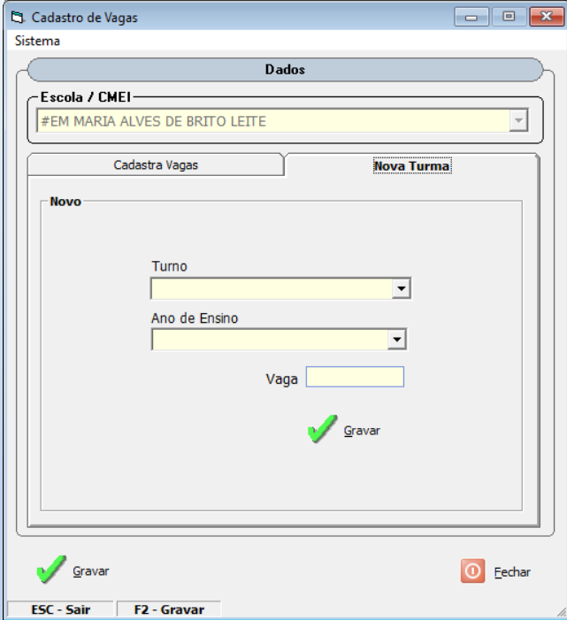

Visão Geral do Formulário
Nome do Formulário: Controle de Crianças Especiais
Finalidade:
Este formulário permite visualizar, cadastrar e atualizar os dados das crianças especiais matriculadas na escolas do município.
Principais Funcionalidades:
- Exibir todas as crianças especiais cadastradas na escola.
- Editar os dados da criança.
- Incluir nova criança, quando necessário.
- Emitir relatórios dos dados cadastrados.
Quando utilizar este formulário:
Sempre que houver necessidade de atualizar os dados da criança ou cadastrar uma nova.
Vagas Disponíveis
Função da Tela:
Exibe todas as vagas cadastradas por turno e ano de ensino, permitindo a atualização rápida das quantidades.
Como utilizar:
- Clique na coluna Vagas para editar a quantidade.
- Digite o novo valor e pressione ENTER para confirmar.
- Se não houver mais vagas, informe 0.
- Se a turma não estiver listada, clique em Nova Turma para cadastrar.

Tela 02
Cadastro / Edição de Vagas
Função da Tela:
Permite cadastrar ou editar as informações de uma turma, incluindo turno, ano de ensino e quantidade de vagas.
Descrição dos Campos:
- Turno: Selecione o turno da turma (Manhã, Tarde ou Integral).
- Ano de Ensino: Escolha o ano correspondente (ex.: Pre 4, Pre5, 1º Ano ..., 2º Ano...).
- Vaga: Informe a quantidade de vagas disponíveis. Use 0 se não houver vagas.
- Gravar: Salva as informações e atualiza a lista da Tela 01.